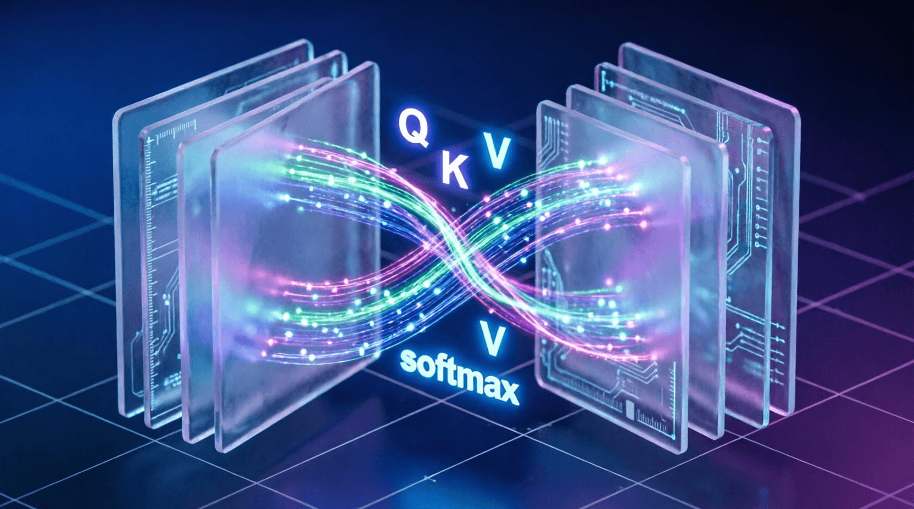

Урок 13: Полная архитектура Transformer
ML-инженер • Блок 3: Современные тяжелые архитектуры
Мы подошли к кульминации третьего блока. Объединив механизмы многоголового внимания (MHA), послойную нормализацию (LayerNorm) и полносвязные сети (Feed-Forward Network), мы соберем канонический блок трансформера. На этом уроке мы спроектируем авторегрессионный декодер (Decoder-Only) — математический фундамент, на котором построены все современные языковые модели (GPT-4, Llama, Claude).
Каждый повторяющийся блок трансформера состоит из двух ключевых макрокомпонентов:
Соберем полноценный блок декодера и объединим стек таких блоков в единую языковую модель с эмбеддингами токенов и финальной головой классификации (LM Head).
import torch
import torch.nn as nn
from torch.nn import functional as F
class FeedForward(nn.Module):
def __init__(self, d_model, d_ff):
super().__init__()
self.w_1 = nn.Linear(d_model, d_ff)
self.w_2 = nn.Linear(d_ff, d_model)
self.gelu = nn.GELU()
def forward(self, x):
return self.w_2(self.gelu(self.w_1(x)))
class TransformerBlock(nn.Module):
def __init__(self, d_model, num_heads):
super().__init__()
# Для простоты демонстрации используем стандартный nn.MultiheadAttention
self.attn = nn.MultiheadAttention(embed_dim=d_model, num_heads=num_heads, batch_first=True)
self.ffn = FeedForward(d_model, d_ff=4 * d_model)
self.ln1 = nn.LayerNorm(d_model)
self.ln2 = nn.LayerNorm(d_model)
def forward(self, x, mask=None):
# Pre-LN подход: нормализация ДО внимания
attn_out, _ = self.attn(self.ln1(x), self.ln1(x), self.ln1(x), attn_mask=mask, need_weights=False)
x = x + attn_out # Skip-connection
x = x + self.ffn(self.ln2(x)) # Второй Pre-LN + FFN
return x
class MiniGPT(nn.Module):
def __init__(self, vocab_size, d_model, num_heads, num_layers, max_seq_len):
super().__init__()
self.max_seq_len = max_seq_len
self.token_embeddings = nn.Embedding(vocab_size, d_model)
self.position_embeddings = nn.Embedding(max_seq_len, d_model)
self.layers = nn.ModuleList([TransformerBlock(d_model, num_heads) for _ in range(num_layers)])
self.ln_f = nn.LayerNorm(d_model)
self.lm_head = nn.Linear(d_model, vocab_size, bias=False)
def forward(self, idx):
batch_size, seq_len = idx.size()
assert seq_len <= self.max_seq_len, f"Последовательность {seq_len} превышает лимит {self.max_seq_len}"
pos = torch.arange(0, seq_len, dtype=torch.long, device=idx.device).unsqueeze(0)
x = self.token_embeddings(idx) + self.position_embeddings(pos)
# Каузальная маска: заполняем -inf для будущих позиций
mask = torch.triu(torch.full((seq_len, seq_len), float('-inf'), device=idx.device), diagonal=1)
for layer in self.layers:
x = layer(x, mask=mask)
x = self.ln_f(x)
logits = self.lm_head(x) # [Batch, Seq_Len, Vocab_Size]
return logitsНа этапе генерации модель предсказывает логиты только для следующего токена (на основе последнего вектора из последовательности). Мы берем распределение вероятностей, применяем софтмакс, выбираем токен, добавляем его к истории и повторяем цикл заново.
Напишите метод generate(self, idx, max_new_tokens) внутри класса MiniGPT. Метод должен принимать начальный контекст idx формы [1, current_len], делать предсказание через forward, извлекать логиты последнего токена, применять к ним жадный выбор (наибольшая вероятность через torch.argmax(dim=-1)) и конкатенировать предсказанный токен к idx в цикле for. Протестируйте авторегрессионную генерацию 20 новых токенов.
class MiniGPT(nn.Module):
# ... (__init__ и forward из урока) ...
@torch.no_grad()
def generate(self, idx, max_new_tokens):
"""
Авторегрессионная генерация текста.
idx: [1, current_len] — начальные токены
max_new_tokens: сколько новых токенов сгенерировать
"""
for _ in range(max_new_tokens):
# 1. Получаем логиты для всей последовательности
logits = self.forward(idx)
# 2. Берем логиты ТОЛЬКО последнего токена
# ВАШ КОД ЗДЕСЬ: извлеките последний токен из logits
# 3. Применяем softmax и выбираем токен с наибольшей вероятностью
# ВАШ КОД ЗДЕСЬ: probs = F.softmax(...); next_token = torch.argmax(...)
# 4. Добавляем новый токен к последовательности
# ВАШ КОД ЗДЕСЬ: idx = torch.cat([idx, next_token], dim=1)
return idx
# Тестирование:
# model = MiniGPT(...)
# start = torch.tensor([[1, 2, 3]]) # начальные токены
# generated = model.generate(start, max_new_tokens=20)
# print(generated)class MiniGPT(nn.Module):
# ... (__init__ и forward из урока) ...
@torch.no_grad()
def generate(self, idx, max_new_tokens):
for _ in range(max_new_tokens):
logits = self.forward(idx) # [1, seq_len, vocab_size]
# Берем логиты только последнего токена
logits = logits[:, -1, :] # [1, vocab_size]
# Применяем softmax и выбираем токен с наибольшей вероятностью (greedy)
probs = F.softmax(logits, dim=-1)
next_token = torch.argmax(probs, dim=-1, keepdim=True) # [1, 1]
# Добавляем новый токен к последовательности
idx = torch.cat([idx, next_token], dim=1)
return idx
# Пример использования:
# start = torch.tensor([[42, 15, 87]]) # начальные токены
# generated = model.generate(start, max_new_tokens=20)
# print("Сгенерировано:", generated[0].tolist())Greedy decoding (argmax) всегда выбирает токен с максимальной вероятностью. Это детерминировано, но часто приводит к скучным, повторяющимся текстам.
Приложение бесплатное. Было и останется.
Если проект помог вам или вашим близким — можете поддержать разработку добровольным переводом.
❤️ Спасибо за поддержку!
Перейти в каталог
